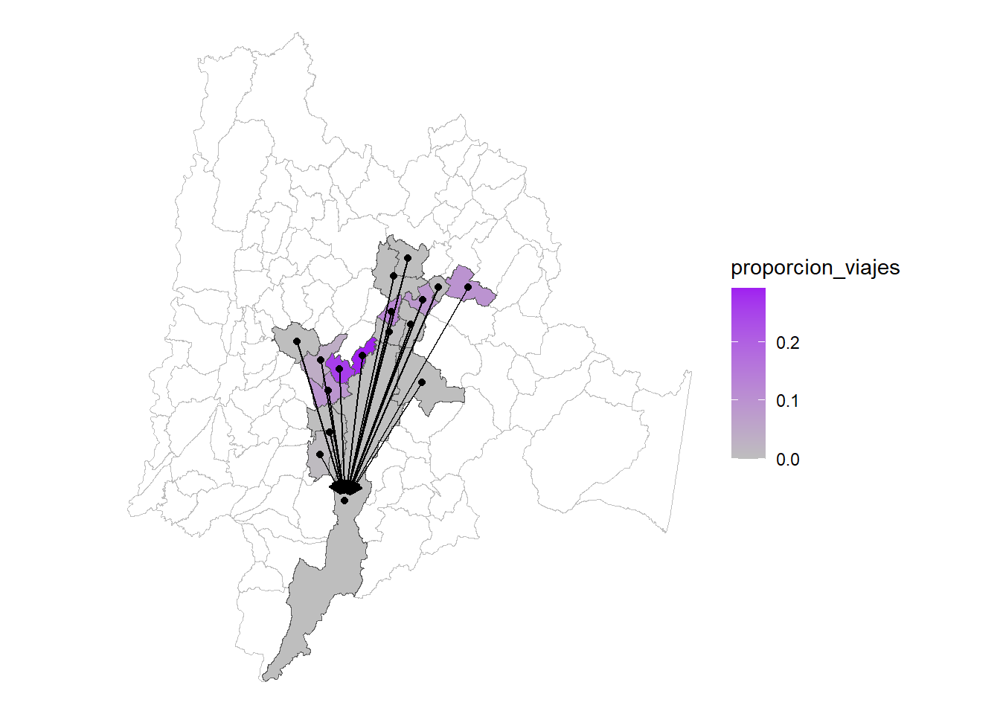

| Fuente | Categoría |
|---|---|
| Misión Nacional de Bioeconomía | Turismo de naturaleza |
| Medicamentos esenciales, biotecnológicos, biosimilares y fitoterapéuticos | |
| Ingredientes naturales y bioactivos para alimentos, cosméticos y farma | |
| Agricultura, ganadería sostenible y de precisión | |
| Bioinsumos agrícolas | |
| Química verde | |
| Bioenergía y biocombustibles | |
| Biofactorías y biorefinerías | |
| Medicina personalizada y traslacional | |
| Medicina regenerativa | |
| Biotecnología avanzada en salud a escala productiva y comercial | |
| Autor | Productos asociados a residuos de actividades económicas |
| Productos de la industria que usan la madera | |
| Productos de industria manufacturera que usan recurso biológico |
Bioeconomía en Bogotá - Región
Sectores económicos asociados a la bioeconomía
Productos de la industria que usan madera
En el RNC se encontraron las siguientes mercancías asociadas a Productos de la industria que usan la madera (ver Tabla 8), con un total de flujo de mercancía de 12833 viajes de Bogotá hacia los municipios, destacando Cajicá (2891), Funza (2594) y Madrid (1673) viajes. En el caso opuesto, de los municipios de Bogotá - Región a la capital existe un total de 48088 viajes de Bogotá hacia los municipios, destacando Cota (14076), Funza (12431) y Cajicá (5871)


| mercancia | viajes_origen | viajes_destino |
|---|---|---|
| cajones; cajas; jaulas; tambores y envases similares; de madera; carretes | 5408 | 26260 |
| papel y carton corrugados (incluso revestidos por encolado); rizados (<crepes | 2910 | 12438 |
| papel del tipo del utilizado para papel higienico; toallitas para desmaquilla | 2584 | 6898 |
| papel y carton obtenidos por pegado de hojas planas; sin estucar ni recubrir | 693 | 24 |
| madera en bruto; incluso descortezada; desalburada o escuadrada | 250 | 150 |
| las demas manufacturas de madera | 198 | 35 |
| madera contrachapada; madera chapada y madera estratificada similar | 158 | 24 |
| herramientas; monturas y mangos de herramientas; monturas de cepillos; mang | 128 | 141 |
| tableros de particulas y tableros similares de madera o de otras materias le?o | 121 | 27 |
| bloques y placas; filtrantes; de pasta de papel - | 70 | 30 |
| los demas papeles y cartones; sin estucar ni recubrir; en bobinas (rollos) | 52 | 648 |
| madera (incluidas las tablillas y frisos para parques; sin ensamblar) perfila | 50 | 13 |
| madera densificada en bloques; planchas; tablas o perfiles | 49 | 667 |
| papel y carton kraft; sin estucar ni recubrir; en bobinas o en hojas; excep | 43 | 35 |
| construcciones prefabricadas | 29 | 13 |
| papel y carton; sin estucar ni recubrir; del tipo de los utilizados para esc | 22 | 149 |
| madera aserrada o desbastada longitudinalmente; cortada o desenrollada; incl | 16 | 35 |
| papel del tipo del utilizado para papel higienico y papeles similares; guata | 15 | 20 |
| articulos de mesa o de cocina; de madera | 8 | 11 |
| flejes de madera; rodrigones hendidos; estacas de madera; apuntadas; sin ase | 7 | NA |
| obras y piezas de carpinteria para construcciones; incluidos los tableros cel | 5 | 350 |
| le?a; madera en plaquitas o particulas; aserrin; desperdicios y desechos; d | 3 | 30 |
| tableros de fibra de madera u otras materias le?osas; incluso aglomerados co | 3 | 2 |
| marqueteria y taracea; cofres; cajas y estuches para joyeria u orfebreria y m | 2 | 1 |
| papel carbon; papel autocopia y demas papeles para copiar o transferir (excep | 2 | 3 |
| papel y carton sulfurizado; papel resistente a las grasas; papel vegetal | 2 | NA |
| trenzas y articulos similares; de materias trenzables; materias trenzables; | 2 | 11 |
| articulos de cesteria obtenidos directamente en su forma con materias trenzables | 1 | 8 |
| lana (viruta) de madera; harina de madera | 1 | 1 |
| papel para decorar y revestimientos similares de paredes; papel para vidrieras | 1 | 5 |
| Fuente: Elaboración propia | ||
| Información: 1 Misión Nacional de Bioeconomía |